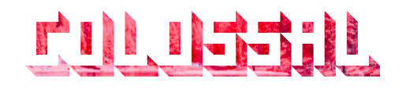
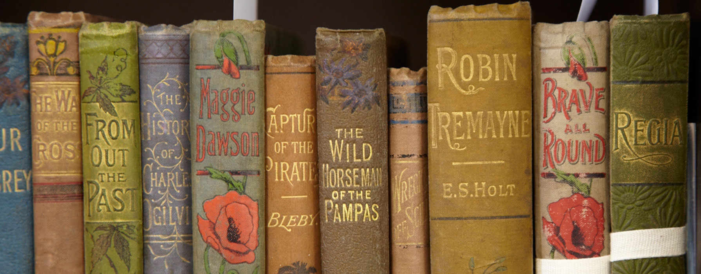

About

...Just for Germanists
Colossal for Germanists is a side-project of Colossal, the international platform for contemporary art and visual expression that explores a vast range of creative disciplines. With an archive of over 6,000 articles written by seven contributors, we pride ourselves in celebrating the work of both emerging and established artists through an ongoing commitment to make art accessible to everyone. Our coverage explores visual culture through the latest in fine art, design, modern craft, street art, photography, illustration, science, and animation. Here at Colossal for Germanists, we concern ourselves with all that makes the world go round in culture in the German-speaking world.
Our Community
In a world brimming with information overload, environmental catastrophe, capitalism run amok, and social injustice, we curate Colossal to focus on the most positive, diverse, and impactful stories around the issues we care about most. It is our intent to amplify the voices of artists working toward a more equitable and environmentally-friendly future by utilizing innovation, unexpected materials, humor, spectacle, and vast reserves of skill and hope.
Colossal was founded in 2010 by writer and curator Christopher Jobson. Over the last decade we have been honored with accolades by The National Endowment for the Arts, TED, and PBS Art21. Colossal won the UTNE Media Award for Arts Coverage and has been nominated for a Webby.
Colossal is designed to serve as an online gallery of visually spectacular artwork, while seeking to educate and inform rather than criticize or interpret. Through this effort, Colossal is used as inspiration and instruction in classrooms across the arts and sciences from grade school through graduate school. Via our website, newsletters, and social media impressions, Colossal reaches an estimated 10 million monthly readers.